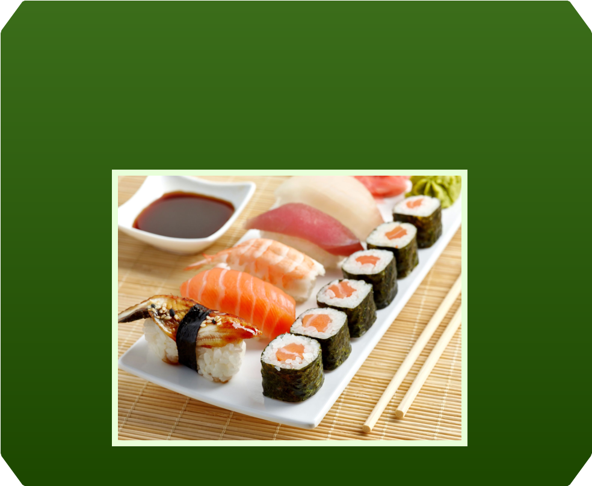
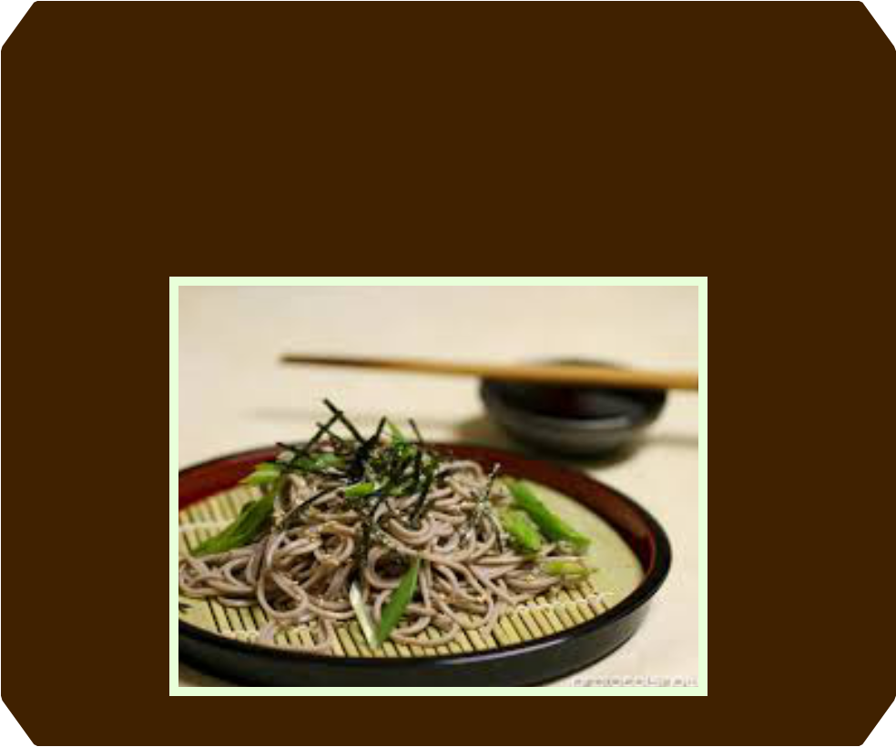

Designed by Lê Nguyễn Thanh Trúc
Design of Online Educational Resources. Instructor: Nguyễn Ngọc Vũ, Ph.D
Copyright © 2017. All rights reserved.


HISTORY AND FOOD
Japanese cuisine has been influenced by the food customs of other
nations, but has adopted and refined them to create its own unique
cooking style and eating habits.
The first foreign influence on Japan was China around 300 B.C. , when
the Japanese learned to cultivate rice. The use of chopsticks and the
consumption of soy sauce and soybean curd (tofu) also came from
China.
The Buddhist religion, one of the two major religions in Japan today
(the other is Shintoism), was another important influence on the
Japanese diet. In the A.D. 700s, the rise of Buddhism led to a ban on
eating meat. The popular dish, sushi (raw fish with rice) came about as
a result of this ban. In the 1800s, cooking styles became simpler. A
wide variety of vegetarian (meatless) foods were served in small
portions, using one of five standard cooking techniques. All foods
were divided into five color groups (green, red, yellow, white, and
black-purple) and six tastes (bitter, sour, sweet, hot, salty, and
delicate). The Japanese continue to use this cooking system.
Beginning in the early 1200s, trade with other countries began
bringing Western-style influences to Japan. The Dutch introduced
corn, potatoes, and sweet potatoes. The Portuguese introduced
tempura (batter frying).
After a ban of more than one thousand years, beef returned to Japan
during the Meiji Period (1868–1912). Western foods, such as bread,
coffee, and ice cream, become popular during the late twentieth
century. Another Western influence has been the introduction of
timesaving cooking methods. These include the electric rice cooker,
packaged foods such as instant noodles, instant miso (fermented
soybean paste) soup, and instant pickling mixes. However, the
Japanese are still devoted to their classic cooking traditions.

SUSHI
Put simply, sushi is raw fish served on rice seasoned lightly with
vinegar. It’s in the variety of flavours and textures – like tangy, creamy
uni (sea urchin roe) and plump, juicy, ama-ebi (sweet shrimp) – that
things get interesting. Despite sushi’s lofty image, it has a humble
origin: street food.
RAMEN
Ramen, egg noodles in a salty broth, is Japan’s favourite late night meal.
It’s also the perfect example of an imported dish – in this case from
China – that the Japanese have made completely and deliciously their
own. There are four major soup styles: tonkotsu (pork bone), miso, soy
sauce and salt. Fukuoka is particularly famous for its rich tonkotsu
ramen; pungent miso ramen is a specialty of Hokkaido.

SOBA
Soba – long, thin buckwheat noodles – has long been a staple of
Japanese cuisine, particularly in the mountainous regions where hardy
buckwheat fares better than rice. The noodles are served in either a hot,
soy sauce-flavoured broth or at room temperature on a bamboo mat with
broth on the side for dipping. Purists, who bemoan soup-logged
noodles, prefer the latter.